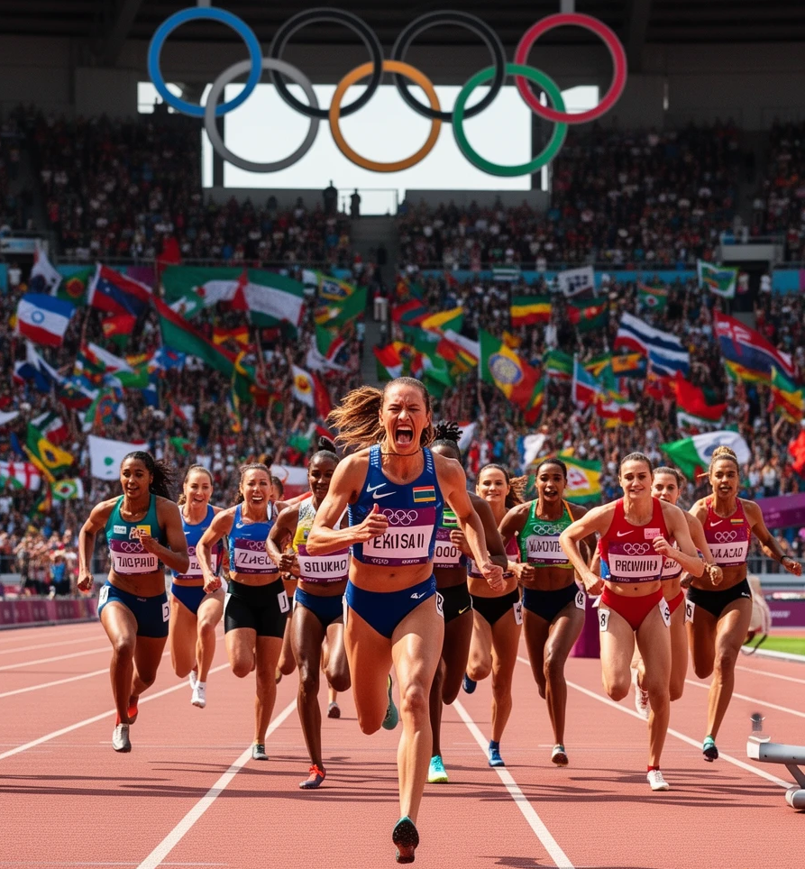
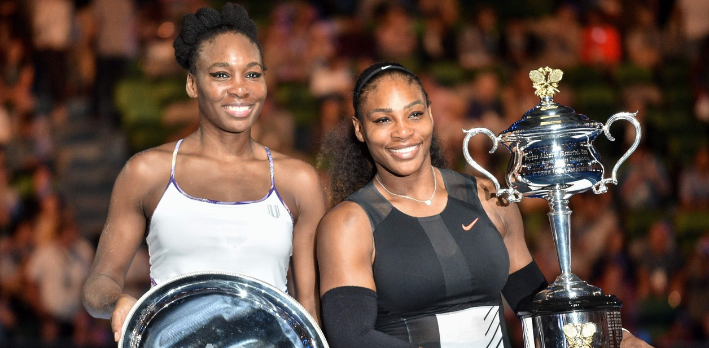
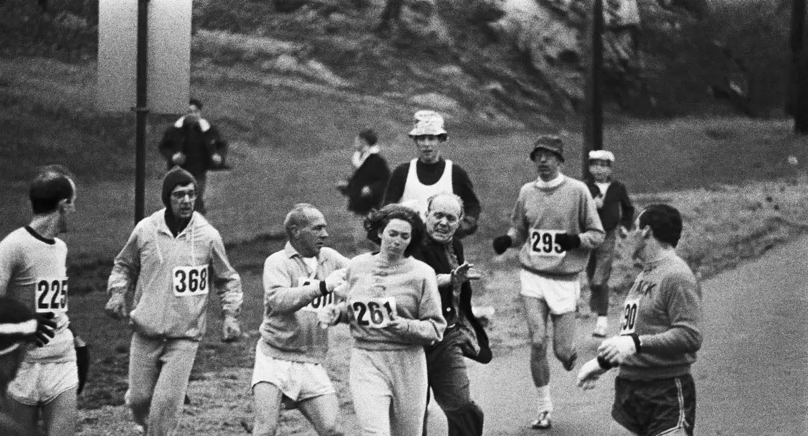
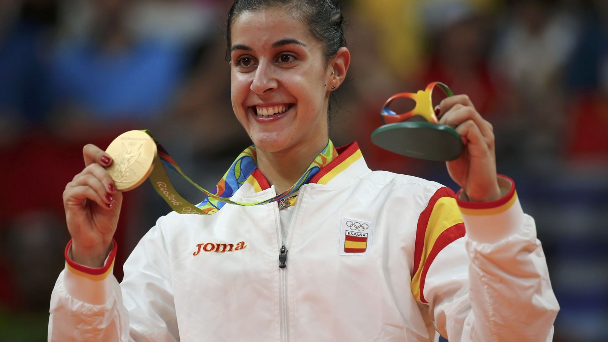

Mujeres en el deporte
Hace muchos años, las mujeres no podían participar en los Juegos Olímpicos. Sin embargo, esto cambió con el tiempo. En el año 1900, algunas mujeres participaron por primera vez.
Hoy en día, en el "primer mundo":
- Las mujeres participan en todos los deportes.
- Han conseguido grandes logros.
- Son un ejemplo de esfuerzo y superación.

Mujeres referentes en el deporte
Gracias a su esfuerzo, valentía y superación, han conseguido grandes logros y se han convertido en ejemplos para todo el mundo. Hoy en día, sabemos que el deporte es para todos y todas, y estas deportistas son un claro ejemplo de ello.
Serena y Venus Williams
Serena y Venus son dos hermanas que han sido de las mejores tenistas de la historia. Han ganado numerosos torneos y han llegado a ser número uno del mundo.
Además de sus éxitos deportivos, han luchado por la igualdad de las mujeres en el deporte, defendiendo sus derechos y demostrando que el trabajo en equipo y la constancia son fundamentales.

Kathrine Switzer
En el año 1967 participó en la maratón de Boston, cuando las mujeres no tenían permitido competir en este tipo de pruebas.
Durante la carrera, intentaron detenerla, pero ella continuó y consiguió terminarla. Gracias a su valentía, hoy en día las mujeres pueden participar en maratones y otras competiciones de larga distancia.

Carolina Marín
Jugadora de bádminton que ha conseguido ser campeona olímpica y campeona del mundo.
Su carrera no ha sido fácil, ya que ha sufrido lesiones importantes, pero ha sabido superarlas con esfuerzo y constancia. Es un ejemplo claro de trabajo duro y perseverancia.

PARA SABER MÁS
Aquí os dejo un vídeo sobre más mujeres deportistas que cambiaron la historia del deporte: